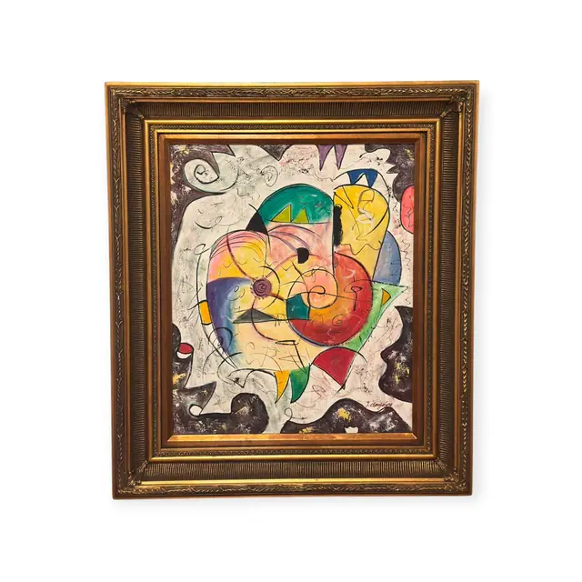
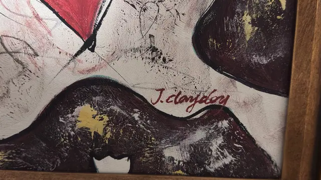

Paintings & Prints
Colourful Abstract Head in Gilt Frame, J. Clayton, Signed, Framed
J. Clayton · late 20th to early 21st century
Price Upon Request


About the Item
J. Clayton. A dense central cluster of biomorphic shapes - a teal dome with yellow zig-zags, a pink and yellow crescent, a red disc, a cobalt wedge and a small spiral eye - floats on a scraped white and grey ground. Loose black ink lines whip across the whole surface in loops, spirals and calligraphic squiggles, and a border of deep aubergine-black scumbling frames the composition on all four sides with touches of gold leaf. The paint is thin and dragged in places and thickly worked in others, and the canvas weave shows through. The result is bright, playful and deliberately childlike. Medium: acrylic and ink on canvas. Signed lower right of the composition, in dark red, reading "J. Clayton". Inscribed on the reverse or mount: J. Clayton. Condition: No visible damage; paint surface intact with intentional scraping and drips. Frame shows minor rubbing on the gilt highlights.
Details
- Creator:
- J. Clayton
- Creation Year:
- late 20th to early 21st century
- Dimensions:
- Height: 32.75 in (83.19 cm)
Width: 27.75 in (70.48 cm)
outside of frame - Medium:
- acrylic and ink on canvas
- Period:
- 21St
- Condition:
- Offered in the condition shown in the photographs.
- Reference Number:
- VO-87
- Documentation:
- no certificate photographed
- Gallery Location:
- J. Clayton